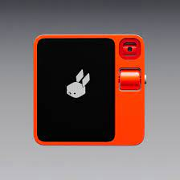
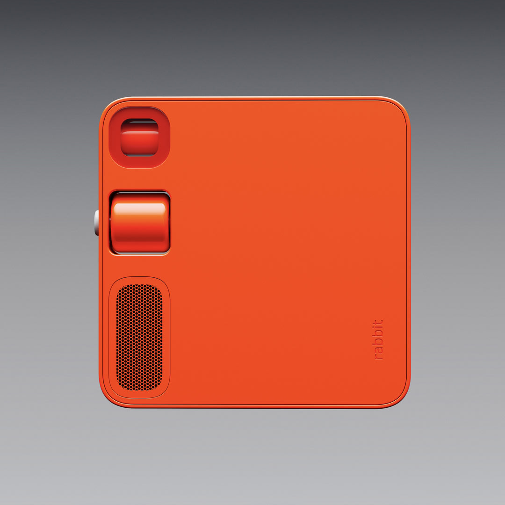
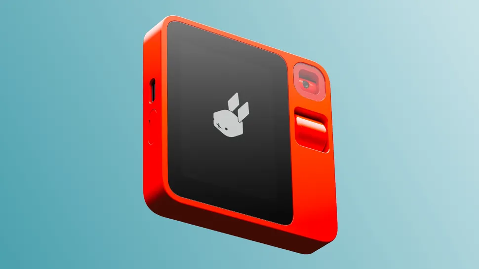
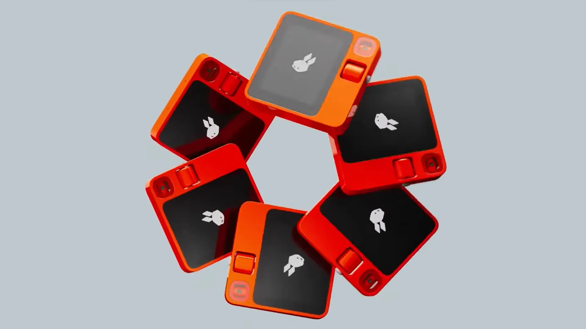
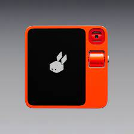
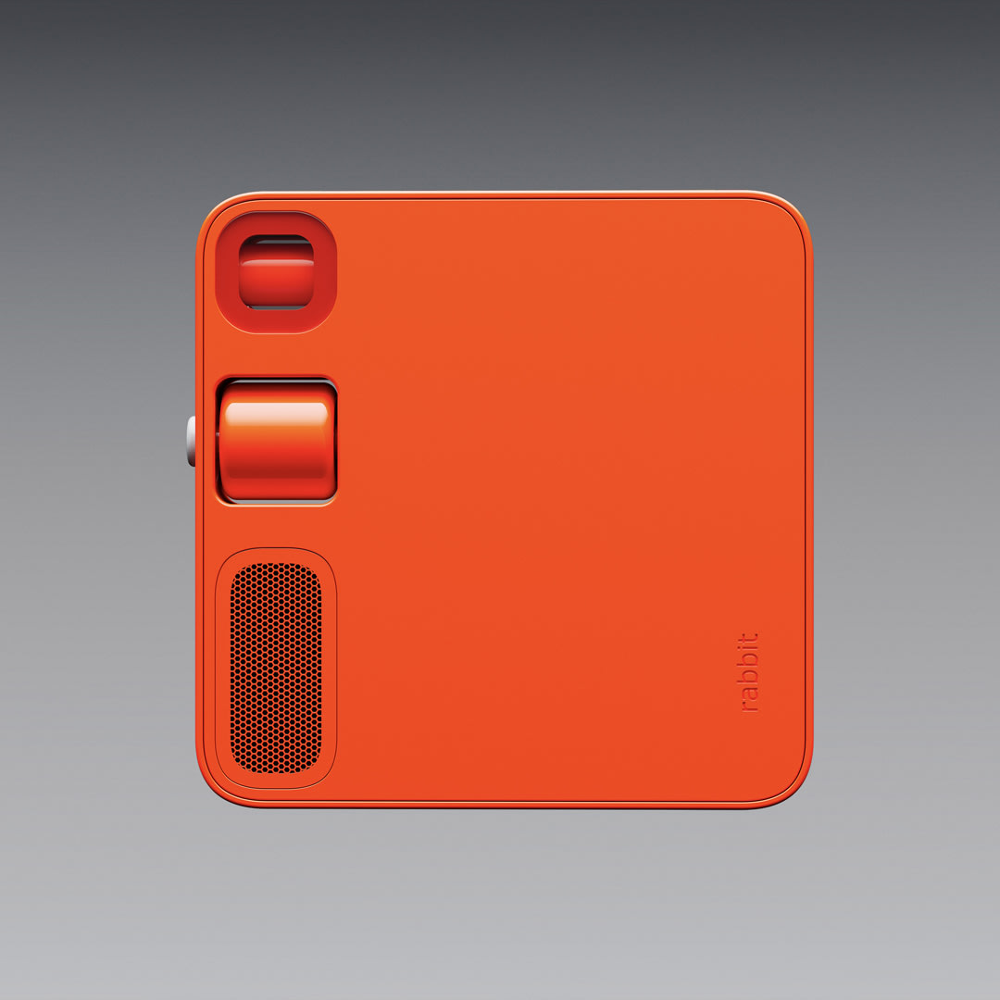
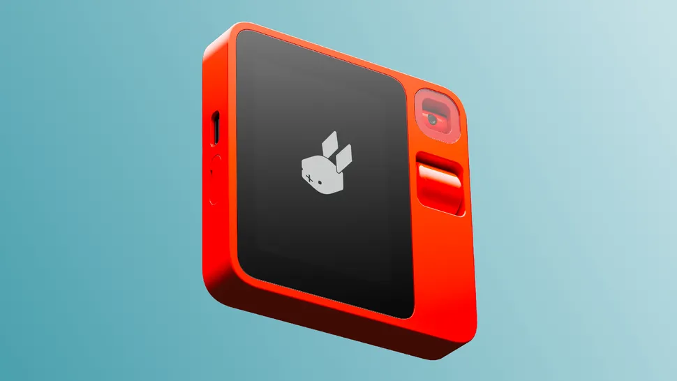
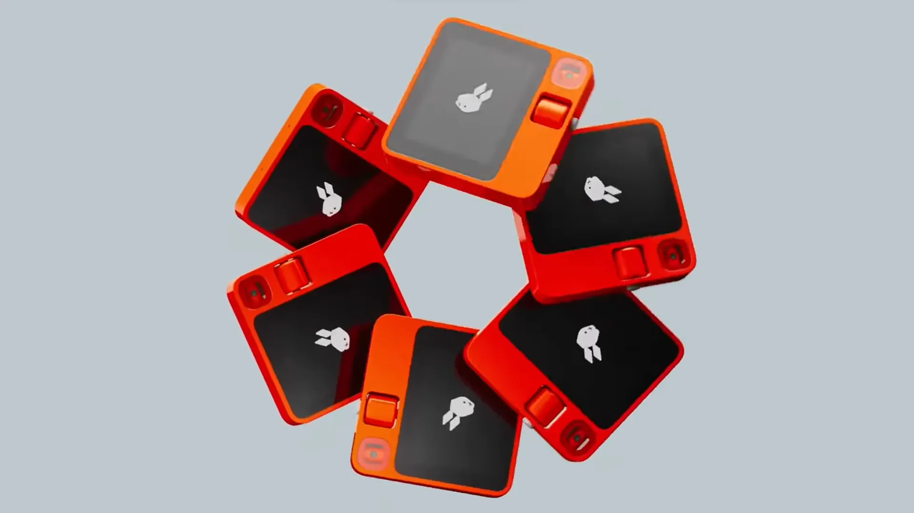

.webp) 







The Rabbit R1 is a compact and innovative electric scooter that offers a convenient and eco-friendly mode of urban transportation. With its sleek design and lightweight construction, the R1 is designed to be easily maneuverable, making it an ideal choice for navigating crowded city streets. Equipped with a powerful electric motor, this scooter provides a smooth and efficient ride, allowing users to cover short distances quickly and effortlessly. One of the standout features of the Rabbit R1 is its focus on user-friendly functionality. The scooter incorporates a simple and intuitive control interface, making it accessible for riders of all experience levels. Its foldable design adds to its practicality, allowing users to easily stow it away or carry it when not in use. Additionally, the R1 is equipped with safety features such as efficient braking systems and built-in lights, ensuring a secure and enjoyable riding experience for commuters and urban travelers alike. The Rabbit R1 emphasizes sustainability with its electric power source, contributing to a cleaner and greener urban environment. With zero emissions during operation, this scooter aligns with the growing demand for eco-conscious transportation solutions. Overall, the Rabbit R1 presents a compelling option for individuals seeking a convenient, user-friendly, and environmentally responsible mode of personal transportation in urban settings.
| Product | Infomation |
|---|---|
| Dimensions | 78mm*78mm*13mm / 3in*3in*0.5in |
| weight | 115g |
| Battery life and charging capabilities | 500 cycles > 80%, charging current 500mA, rate capacity 1000mAh |
| Connectivity details | Bluetooth 5.0 / Wi-Fi with 2.4GHz + 5GHz / 4G LTE |
| color | leuchtorange |
| speaker output | 2W |
| Audio input | Dual microphone array |
| Display | 2.88in TFT touchscreen |
| Processor | MediaTek MT6765 Octa-core (Helio P35) |
| Max cpu frequency | 2.3GHz |
| Memory | 4GB |
| storage | 128GB |
| Number Of Lense | Triple |
| location | magnetometer and GPS |
| Device Operating Systems | IOS |
| Device Storage Capacity | 256.0GB |
| Motion sensor | Accelerometer and gyroscope |
| Operating temperatures | 0°C - 45°C or 32º - 113º F |
| Charging and expansion | USB-C connector |
| Photo resolution | 8MP, 3264x2448 |
| video resolution | 24fps, 1080p |
| Empty SIM card slot | Unlocked |